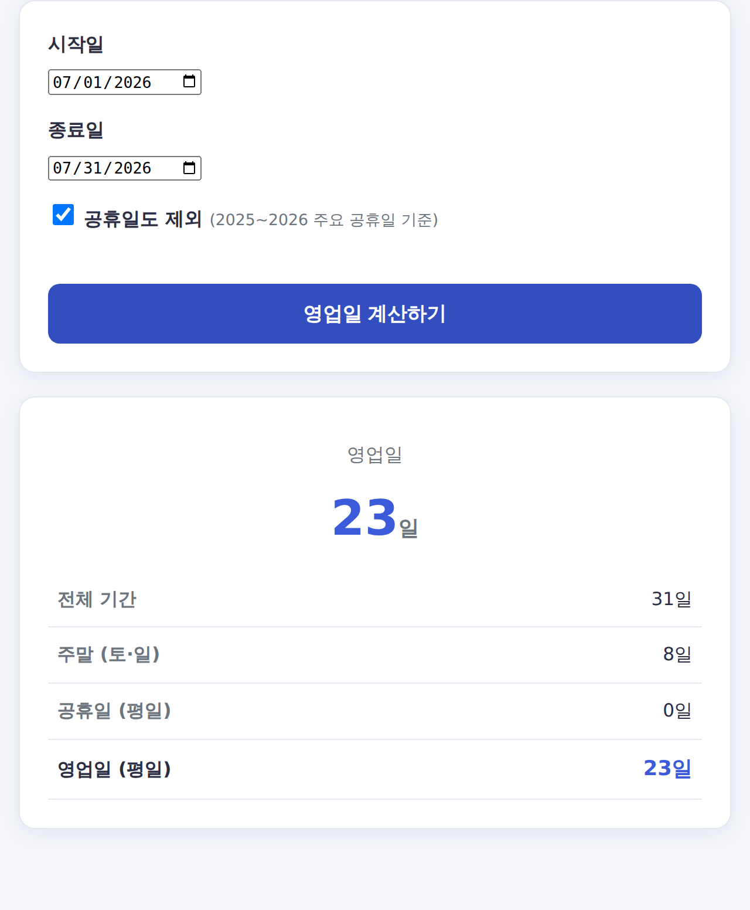

영업일 계산기 사용법 — 주말·공휴일 제외 영업일 수 구하는 법
"영업일 기준 3일 이내 배송", "정산은 영업일 5일 소요" 같은 안내, 많이 보셨죠? 영업일은 주말·공휴일을 뺀 평일을 뜻합니다. 정확히 며칠인지 계산하는 법을 알아봅니다.

영업일이란?
예전에 "영업일 3일 내 정산" 안내를 받고 주말을 빼먹은 채 날짜를 세서 하루를 손해 본 적이 있습니다. 그 뒤로 영업일 세는 법을 확실히 정리해 두었습니다.
영업일은 토요일·일요일과 법정공휴일을 제외한 평일(월~금)입니다. 은행·관공서·회사가 정상 업무를 보는 날이라 납기일·정산일·배송일 계산의 기준이 됩니다.
영업일 계산 방법
- 시작일부터 종료일까지 전체 날짜를 셉니다.
- 이 중 토·일요일을 뺍니다.
- 평일 중 공휴일도 빼면 남는 것이 영업일입니다.
직접 달력을 세면 공휴일을 놓치기 쉽기 때문에, 공휴일 데이터를 반영한 계산기를 쓰는 것이 정확합니다.
이럴 때 유용해요
- 택배·배송 도착 예정일 계산
- 계약·정산·환불 처리 기한 확인
- 관공서 민원 처리 기간 예상
실무에서 영업일이 어긋나는 3가지 순간
"영업일 3일"이라고 안내받고도 날짜가 안 맞는 경험, 흔하죠. 어긋남은 대부분 아래 세 가지에서 생깁니다.
- 임시·대체공휴일 누락 — 선거일, 명절 대체휴일 등을 빼먹으면 결과가 하루씩 밀립니다.
- 시작일 포함 여부 — '오늘부터 영업일 3일'에서 오늘을 세는지, 다음 영업일부터 세는지에 따라 도착일이 달라집니다.
- 토요일 처리 기준 — 관공서는 토요일이 비영업일이지만, 일부 업종은 토요일을 영업일로 봅니다. 어느 기준인지 먼저 확인하세요.
금융권 '5영업일'은 이렇게 셉니다 (대출 이자 예시)
은행·카드사 안내에서 "영업일 기준 5일"(예: 연체 5영업일)이라는 표현이 자주 나오는데, 세는 방식에 오해가 많습니다. 실제 사례로 보겠습니다.
상황: 매월 25일이 대출 이자 납입일인데, 2026년 5월 25일이 대체공휴일이라 26일이 결제일이 된 경우, '5영업일'은 언제까지일까요?
| 날짜 | 처리 |
|---|---|
| 5/25(월) | 납입 예정일 — 대체공휴일이라 이월 |
| 5/26(화) | 실제 결제일(기준일) |
| 5/27(수) | 영업 1일째 |
| 5/28(목) | 영업 2일째 |
| 5/29(금) | 영업 3일째 |
| 5/30~31(토·일) | 세지 않음(제외) |
| 6/1(월) | 영업 4일째 |
| 6/2(화) | 영업 5일째 — 마지막 날 |
즉 이 경우 6월 2일이 5영업일째입니다. 다만 그날 은행 영업 마감 시각(보통 오후 4시) 전에 납부해야 그 영업일로 인정됩니다.
자주 묻는 질문
Q. 시작일과 종료일도 포함되나요?
본 계산기는 시작일과 종료일을 모두 포함해서 영업일을 셉니다. 기준에 따라 다를 수 있으니 안내문을 확인하세요.
Q. 은행에서 말하는 '5영업일'은 어떻게 세나요?
기준일(납입일이 공휴일이면 다음 영업일)부터 토·일·공휴일을 뺀 영업일만 5일을 셉니다. 다섯 번째 영업일이 마지막 날이며, 그날 은행 영업 마감 시각(보통 오후 4시) 전에 납부해야 인정됩니다.